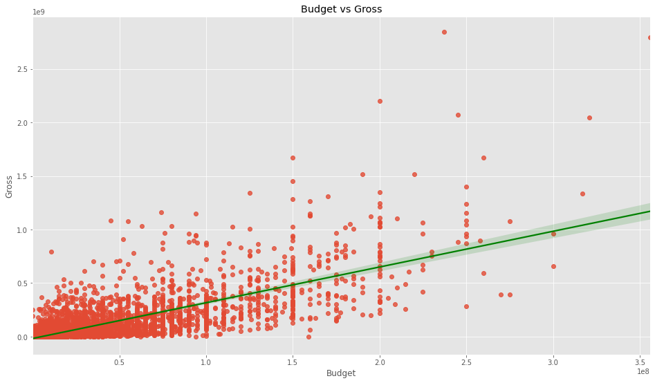

Movies & The Factors that Drive their Success
Introduction
As a big fan of film and movies, I was always intrigued as to what drove them to commercial success. For me personally, if it's a big name director who's films I've enjoyed in the past, like Nolan, Scorsese, or Tarantino, or if there are a lot of positive reviews about it. Generally speaking, I don't care for how much marketing was put into the movie, and I would have a negative connotation towards a movie if I was seeing a lot of their advertisements.
Going in, I had a few assumptions:
- Higher production budget would result in more funds for marketing, leading to more viewership and overall success.
- Bigger production companies would generally see more success, since their production budget would generally be higher.
- A big name director and their fame being attached could carry the movie.
- Commercial success did not necessarily correlate to a good IMDB user rating.
- There will be more user activity on IMDB for movies that were successful.
Data
The data used for this project can be found and downloaded directly on Kaggle: here
The data includes information on over 6000 movies with attributes such as their production budget, their box office revenue, director, year of release, some IMDB information, and etc.
Project
There wasn't much cleaning needed to be done for the dataset, so it was mostly just dropping nulls, and changing some of the data types like budget which was displayed as a float into an integer. There was a bit of confusion with the year and the release date of the movie so I just opted to use the year on the release date and drop the rest entirely as to avoid any confusion.
Afterwards, I used Seaborn to create a regression plot to compare between budget and gross, as shown on the right. Just from a quick glance, it does appear that production budget and gross revenue are closely correlated. It was necessary to further examine what other attributes could be in play.
I started by categorizing the non-numeric columns and assigning them with unique numeric identifiers so that the data from the other text-based attributes could be used in the correlation calculations. The result of that is the correlation matrix shown on the left.
The heatmap shows several points of interest, notably it verified that the initial assumption of production budget and gross revenue had the highest correlation at 0.74. Compared to other attributes, these two were the most correlated, which going back to the initial assumptions, it was most likely the fact that a higher budget would both allow for a higher quality product and also more funds allocated towards marketing, overall resulting in a higher turnout rate.
It is also worth noting that the only other pair of attributes with over 0.5 correlation is gross revenue and IMDB user votes at 0.61. While they are not as nearly as correlated as budget and gross, it is still able to confirm the initial assumption that there would be more user activity on IMDB for movies that were successful. I believe that there is a general tedency amongst people that they feel the need to be critical towards a movie, good or bad, especially since the movie was a blockbuster success. There will always be stronger opinion towards popular, successful movies over the lesser known ones. It is also important to note that, despite this, the actual IMDB rating, or score, was not at all related.
In conclusion, most of the initial assumptions were correct. Production budget plays a significant role towards the box office success of a movie. In turn, these hits saw more users on IMDB giving their ratings of the movie, but none of these factors played a part in how the movie was actually rated. The surprise is that big production companies did not actually seem to be more successful, most likely due to the fact that they choose to splurge on bigger projects and much less on others that they don't see promise in. It also appears that the general public doesn't seem to care who the director was and their name alone was not a driving force to pump viewership and produce successful movies.
The notebook for the project can be found here: movies.ipynb.